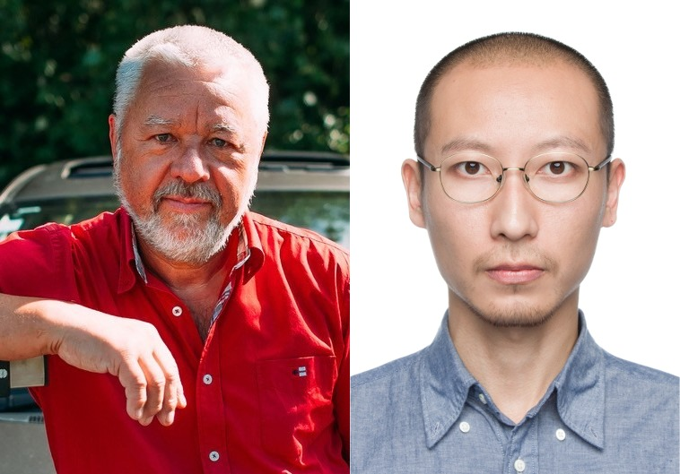
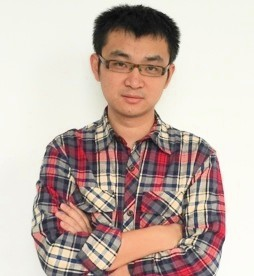
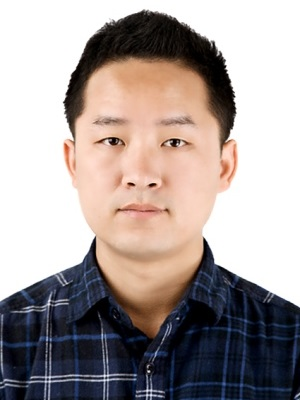

workshop in conjunction with PSIVT 2017 onVision meets Graphics |
| Home | Call for papers | Submission | People | Invited Speakers | Program |
|  |  |  |
|
Reinhard Klette
Auckland University of Technology Dongwei Liu Zhejiang University of Finance and Economics |
Shuaicheng Liu
University of Electronic Science and Technology of China |
Ming-Ming Cheng
Nankai University |
|
Stereo Vision for Artistic Photo Rendering |
MeshFlow for Application of Video Editing |
Weakly supervised image understanding with graphics and vision applications |
| Having depth data at hand based on stereo vision proves to be of very good value for achieving accurate photo effects which depend on 3D scene geometry. The talk reports about photo-artistic image rendering: the simulation of fog in photos, the generation of bokeh effects, or the creation of star effects in night-time photos. The reported work benefited from high-quality stereo results, but also from accurate object segmentation results providing visually satisfying object silhouettes. | The estimation of the high quality camera motion is an essential part for many video editing methods. This talk reports a novel 2D mesh-based motion model, MeshFlow, for the recovery of the camera motion. The MeshFlow is a spatially smooth sparse motion field with motion vectors only at the mesh vertexes. Compared with a single parametric model (e.g., a homography), it can represent spatially variant motions caused by depth variations. Compared with dense optical flows, it is lightweight and more efficient. We will show how to estimate the MeshFlow motion model. Then, we will introduce the underlying applications, including video stabilization, video stitching, video denoising, etc. | Image understanding is one of the most important tasks in both computer vision and computer graphics. How to understand images with little user annotation data is not only important for computer vision researchers to extract meanings from these images, but also important for computer graphics researchers to intelligently interact with the images with little efforts. We will show how low level vision cues, e.g. attention, boundary, over-segmentation, could be used for such light weighted semantic segmentation. We will also introduce how such scene understanding results could be used in applications, such as: image manipulation, synthesis, web images understanding, etc. |
|
Dr. Reinhard Klette is a Fellow of the Royal Society of New Zealand and a professor at The University of Auckland. He was on the editorial board of the International Journal of Computer Vision (2007-2014), the founding Editor-in-Chief of the Journal of Control Engineering and Technology (2011-2013), and an associate editor of IEEE PAMI (2001-2008). He (co-)authored more than 300 publications in peer-reviewed journals or conferences, and books on computer vision, image processing, geometric algorithms, and panoramic imaging. He presented more than 20 keynotes at international conferences. Springer London published in January 2014 his book entitled "Concise Computer Vision''. Dr. Dongwei Liu is a lecture in Zhejiang University of Finance & Economics, Hangzhou, China. He received a Ph.D in Computer Science from University of Auckland, New Zealand, an M.Sc from Xiamen University, China, and a BIM from Sun Yat-sen University, China. His research interests include computational photography, and applications of stereo vision techniques. |
Shuaicheng Liu is an associate professor with the Institute of Image Processing, School of Electronic Engineering, University of Electronic Science and Technology of China, Chengdu, China. He received his Master and PhD degrees from National University of Singapore in 2010 and 2014, respectively. He worked as interns in Microsoft Research Asia in 2011, and Adobe Research in 2013. His publication ranges from top journals and conferences, including ACM TOG, SIGGRAPH, IEEE CVPR, ECCV etc. His work has been transferred as products into several leading companies. His research interests include image and video processing, computational photography, computer graphics and vision. |
Ming-Ming Cheng is an associate professor with CCCE, Nankai University. He received his PhD degree from Tsinghua University in 2012 under guidance of Prof. Shi-Min Hu, and working closely with Prof. Niloy Mitra. Then he worked as a research fellow for 2 years, working with Prof. Philip Torr in Oxford. Dr. Cheng’s research primarily centers on algorithmic issues in image understanding and processing, including image segmentation, editing, retrieval, etc. He has published over 30 papers in leading journals and conferences, such as IEEE TPAMI, ACM TOG, ACM SIGGRAPH, IEEE CVPR, and IEEE ICCV. He has designed a series of popular methods and novel systems, indicated by 5000+ paper citations (1700+ citations to his first author paper on salient object detection). His work has been reported by several famous international media, such as BBC, UK telegraph, Der Spiegel, and Huffington Post. See also: http://mmcheng.net/ |